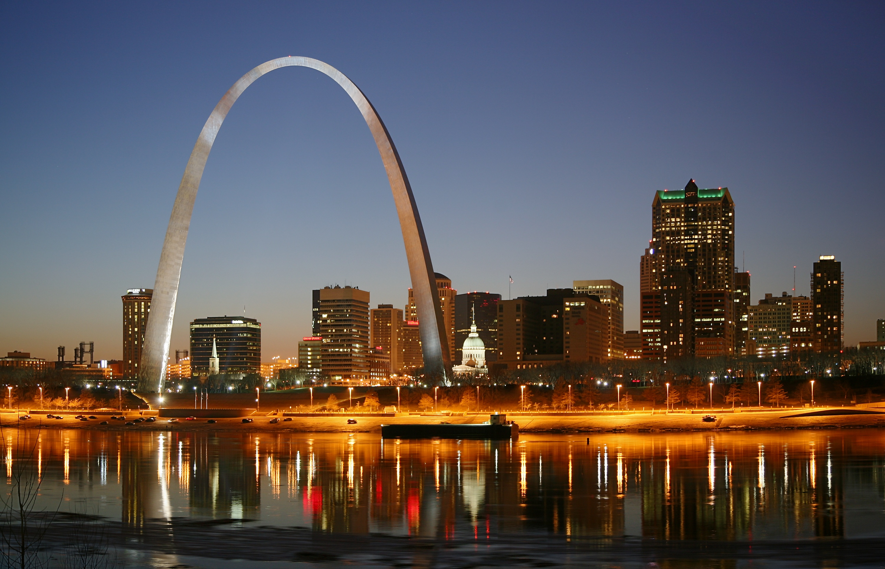
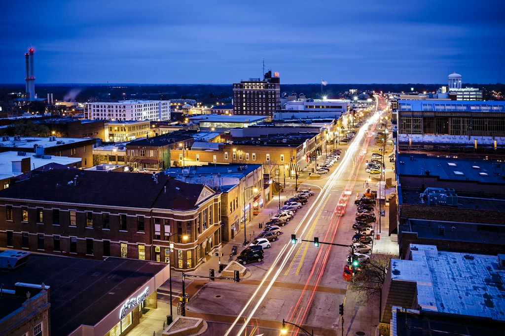
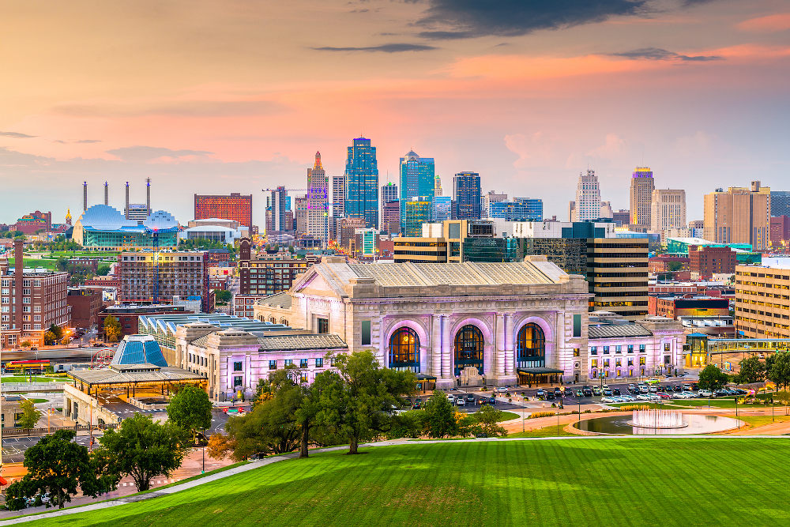
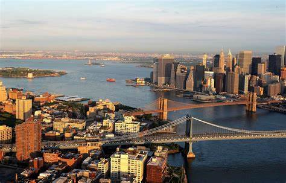

Table of Contents
Find these cities on the maps below and click to visit!
1. St. Louis, MO
2. Columbia, MO
3. Kansas City, MO
4. Brooklyn, NY
5. Newport, RI
1. St. Louis, MO
2. Columbia, MO
3. Kansas City, MO
4. Brooklyn, NY
5. Newport, RI

I was born and raised in the St. Louis suburb of Kirkwood and currently live in nearby Brentwood.
I attended Kirkwood High School where I participated in swimming and water polo. I was also very active in music
and played in several local bands as well as the Kirkwood High School Jazz Ensemble. I renturned to the area
recently after being mostly away for almost 12 years and am happy to be closer to my parents and
extended family. I'm also very happy that St. Louis has a thriving TV/Film industry that I can work in while
I'm here.

I went to college at the University of Missouri (then the University of Missouri-Columbia) where I majored in
English Literature with a minor in German Studies. I got an amazing education at Mizzou that I am extremely grateful
to have. I also enjoyed the local music scene and the food!

After college I participated in the AmeriCorps VISTA program, which is a year-long volunteer assignment. I was
sent to the Kansas City area where I helped a local community organization promote gardening and establish a farmers'
market. I enjoyed going to the late night Jazz Jams at the Mutual Musician's foundation and getting to know people
in the area.

After my AmeriCorps term was up, I decided to move to the East coast. New York was one of my favorite places
to visit, so I settled there. I enjoyed living in various parts of Brooklyn and Manhattan for many years. My favorite
neighborhood is Sunset Park and I hope to live there again one day. The people are so friendly and I loved the local
Puerto Rican Day Parade they had down 5th Ave. New York is also where I met my lovely wife and where I began working in
the film industry as a PA, later moving on to grip and electric work and finally rental house/service which I continue to do today.
.jpg)
In 2018 my then-girlfriend had been wanting to move back to her hometown of Newport, RI, and I was happy to follow her
and try life outside the city again. Rhode Island is such a beautiful state and I enjoyed snorkeling around Brenton Point State Park
and the summers on the beach. I also met some of my best friends there and began taking photography more seriously.